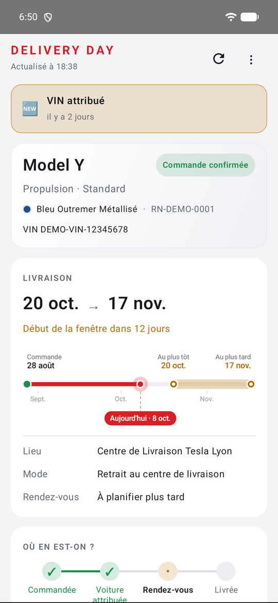
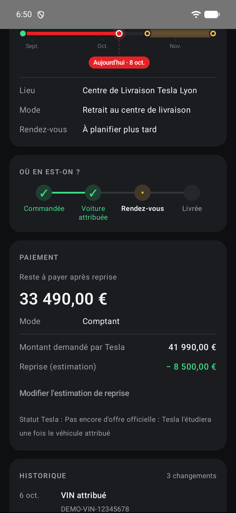
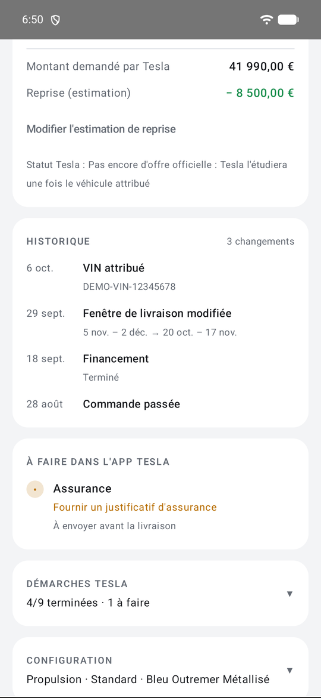
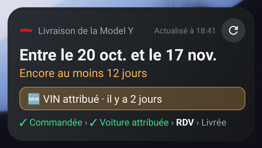
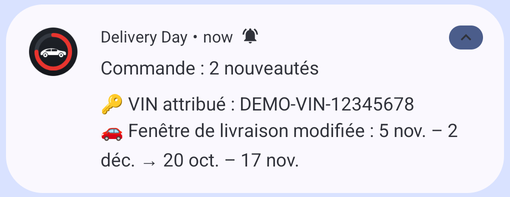

Arrêtez de rafraîchir l'app Tesla.
Delivery Day surveille votre commande Tesla et ne vous prévient que lorsque ça compte : VIN attribué, fenêtre de livraison modifiée, rendez-vous, montant à payer, offre de reprise.



- Fenêtre de livraisonCompte à rebours et frise jusqu'au jour J.
- Notifications utilesLisibles, uniquement pour les vrais changements. Masquées écran verrouillé.
- HistoriqueVoir précisément ce qui a changé, et quand.
- Paiement et repriseMontant à payer et offre de reprise d'un coup d'œil.
- Démarches TeslaSavoir quand Tesla vous demande quelque chose.
- Widget d'accueilLa date de livraison sans ouvrir l'app.


Installation
- Téléchargez le dernier APK depuis les Releases GitHub et ouvrez-le sur le téléphone.
- Touchez « Se connecter avec son compte Tesla » et connectez-vous sur tesla.com.
- Autorisez les notifications et réglez la batterie sur Non restreinte (Samsung/Xiaomi).
- Facultatif : ajoutez le widget.
Respectueuse de votre vie privée
Aucun serveur, aucune pub, aucune statistique. Vous vous connectez sur tesla.com (OAuth + PKCE) : votre mot de passe n'arrive jamais dans l'app. Les jetons sont chiffrés (Android Keystore) et les données de la commande restent sur le téléphone.
Non officielle. Sans lien avec Tesla. Elle utilise l'API privée de l'app mobile Tesla, que Tesla peut modifier ou bloquer à tout moment.